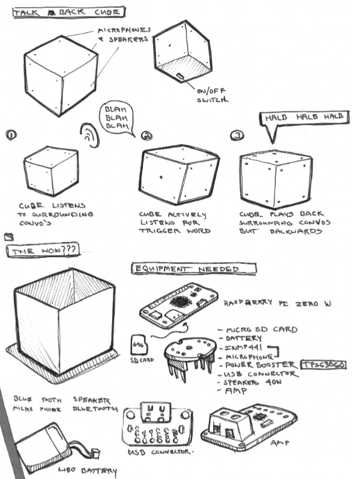
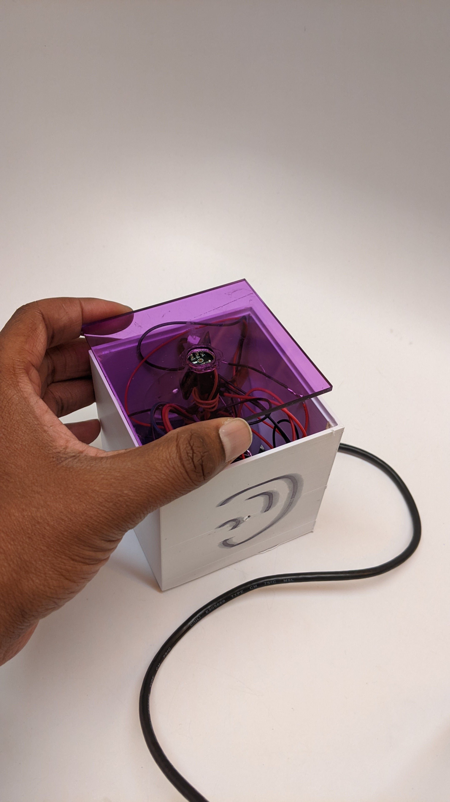
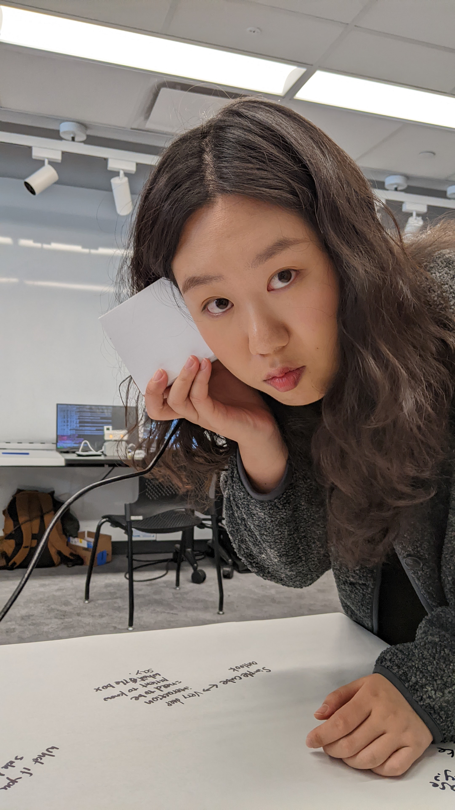

Ideas come from going outside first.
At ITP most of it comes from sci-fi novels and articles by scientists. Some Tumblr blogs. Pinterest, used in the past.
Always paper, in a notepad.
Sketching matters most when the part is complicated, like a mechanical component that has to move a certain way.

SolidWorks, or Fusion 360. This is where the sketch becomes a real object.

The physical test.

Back to step 2, not back to step 3.
I asked whether he wished some tool existed to help their process.
"I like using my mind."